Nov13–152026
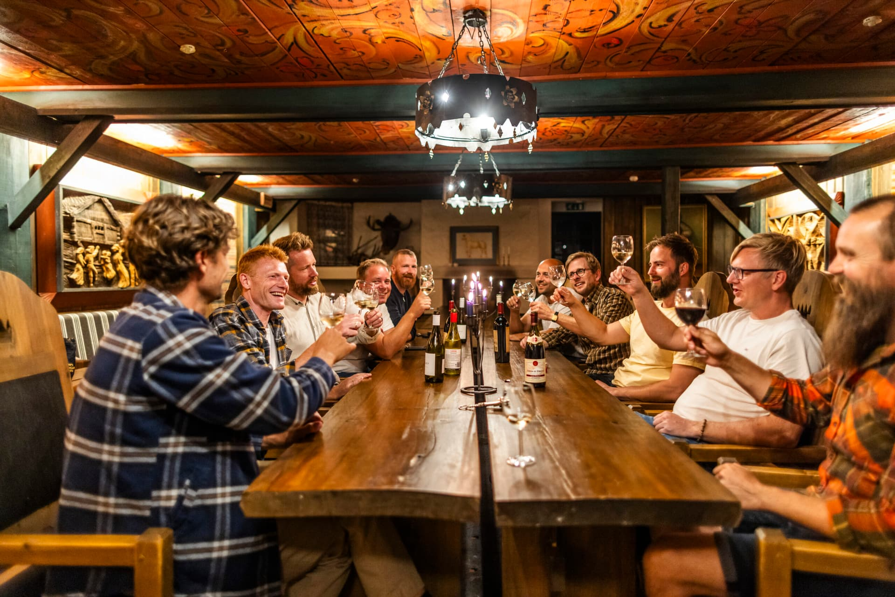
Julebord med Quizgutta
Tradisjonsrikt julebord og en kveld spekket med spørsmål, musikk og morro. Samle gjengen og finn ut hvem som sitter på julekunnskapen.
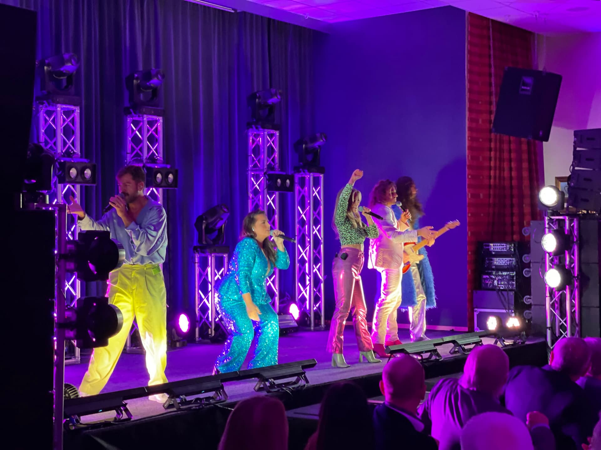
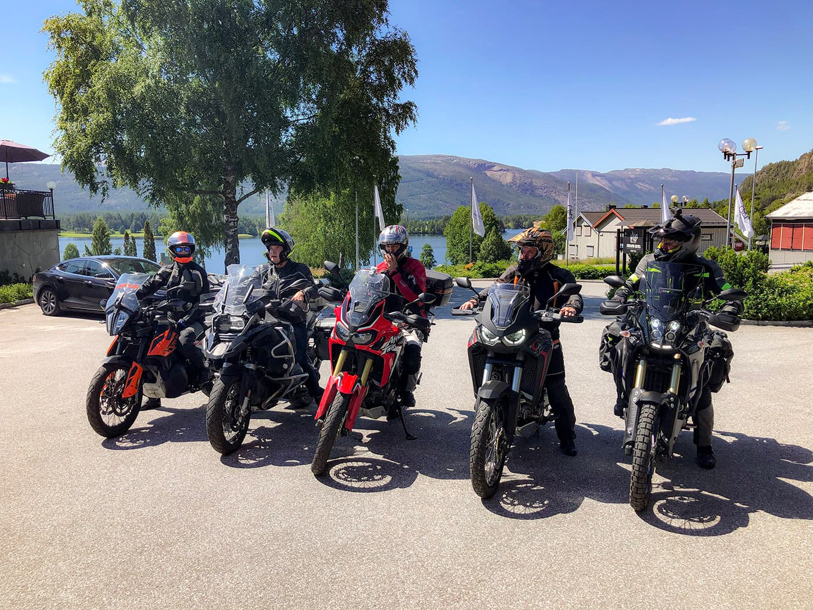
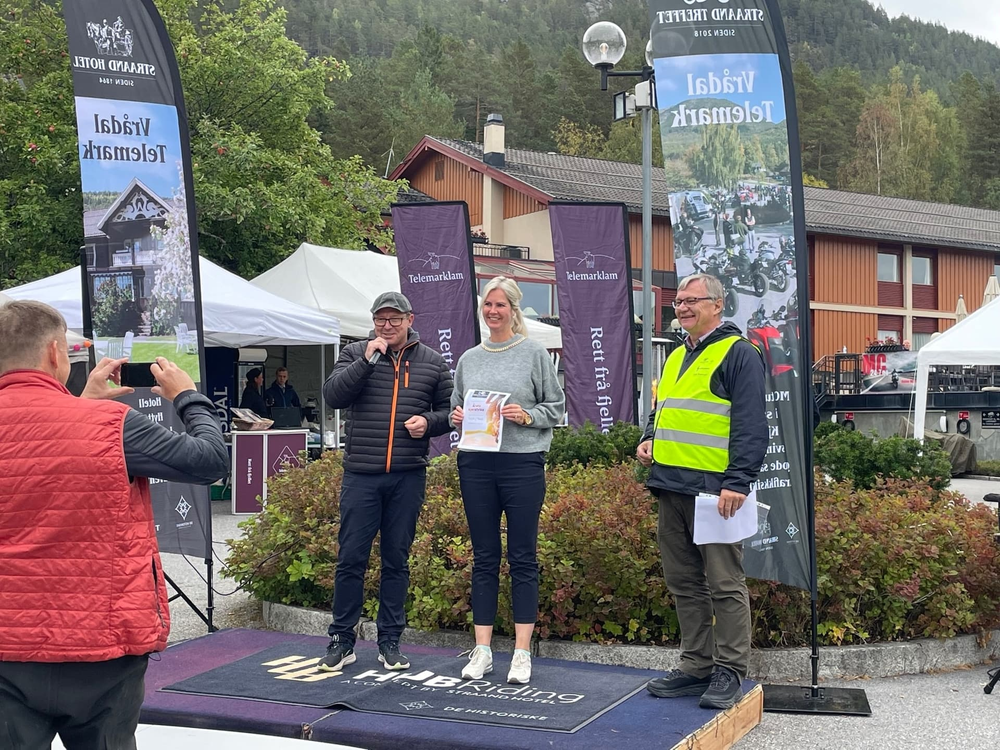
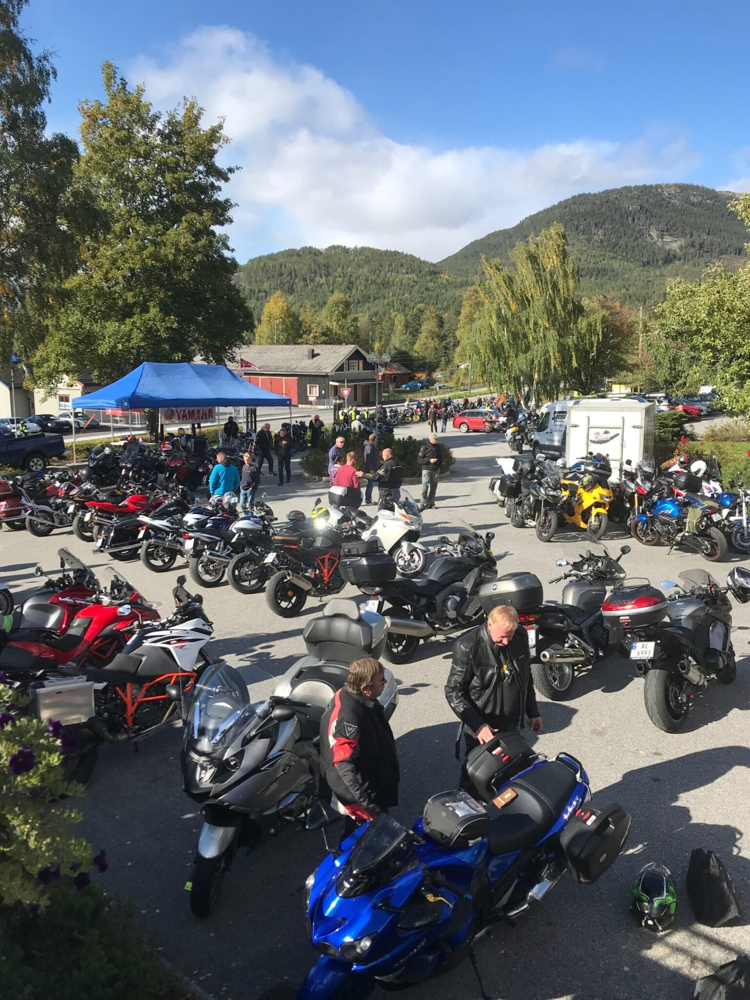
Julebord med show, fakkeltog på nyttårsaften, stjernekikking på truger og treff for motorsyklister, syklister og golfere. Her er kalenderen for året som kommer.

Tradisjonsrikt julebord og en kveld spekket med spørsmål, musikk og morro. Samle gjengen og finn ut hvem som sitter på julekunnskapen.
Julebord for deg med bensin i blodet, sammen med AMCAR og motorvenner fra hele landet. Akevittsmaking, skapersesjon og levende musikk med Vandringsmenn.
Verdensklasse dinnershow med sang, dans og interaktiv underholdning rett ved bordet – med 3-retters middag og afterparty med DJ. Overnattingen er fullbooket, men det er fortsatt billetter til showet.
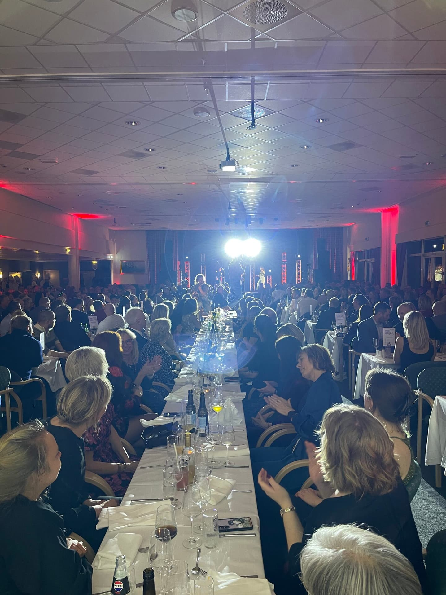
En musikalsk opplevelse med fullt fokus på lave skuldre, samspill og feststemning hele kvelden.
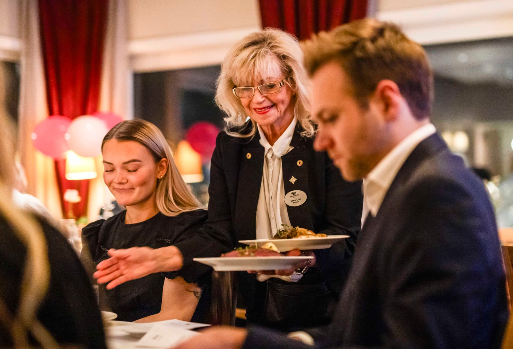
Kombiner et deilig julebord med en latterkveld der tre av Norges morsomste komikere inntar scenen i de historiske lokalene.
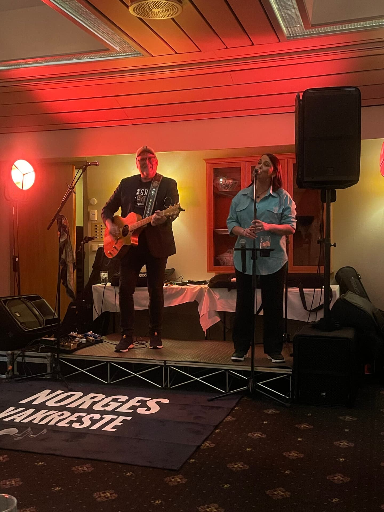
Årets siste julebordshelg byr på livekonsert med E-76 – den perfekte avslutningen på førjulstiden.
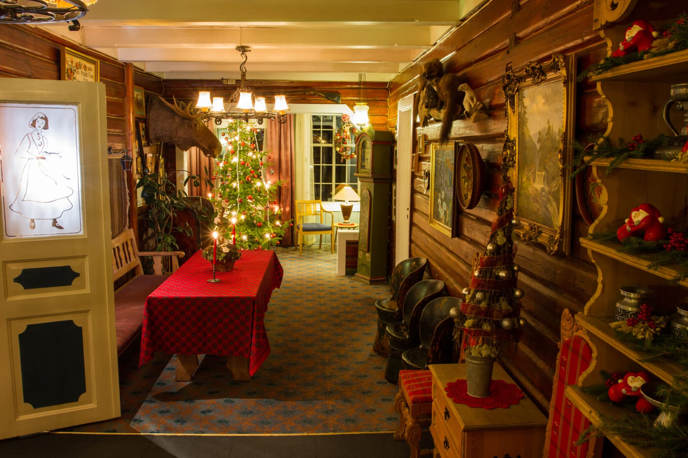
Julegudstjeneste i Vrådal kyrkje, fakkeltog til Nisseland med julegløgg kl. 15, og om kvelden juleaperitiff, tradisjonsrik julemiddag og besøk av julenissen.
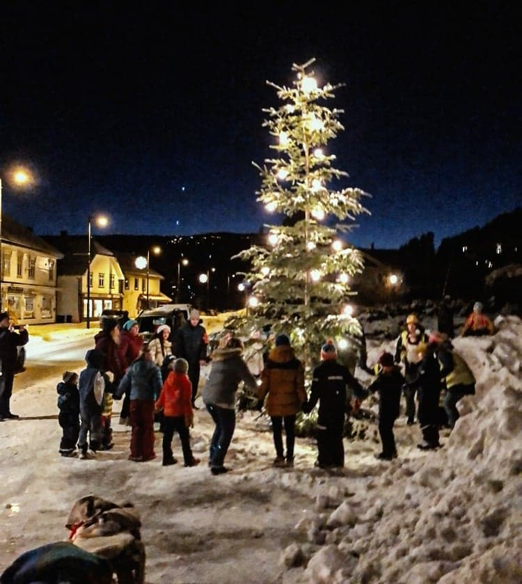
Kl. 16.45 går fakkeltoget til Vrådal sentrum, der varden tennes. Gløgg, fyrverkeri og isbading for de modige – før festmiddag og levende musikk.
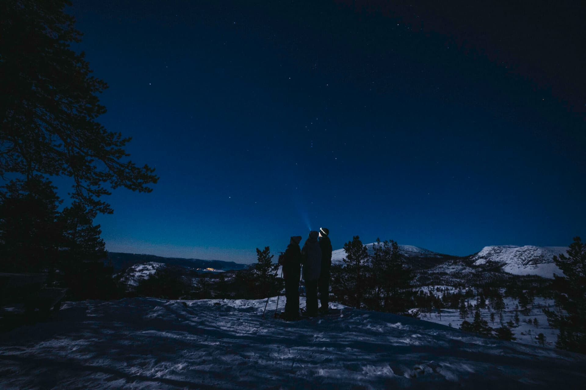
Kveldstur i snøen kl. 20.30 med fortellinger om stjernehimmelen fra norrøn tid til i dag – med gløgg eller kakao. 295 kr per person.

Påskestemning med alpint og langrenn, barneskirenn, hjemmelaget mat og kos i de historiske salongene.
Den tradisjonsrike starten på MC-sesongen i Vestfold og Telemark. Takterrassen fylles av skinnende klassikere og motorsykler fra hele landet.
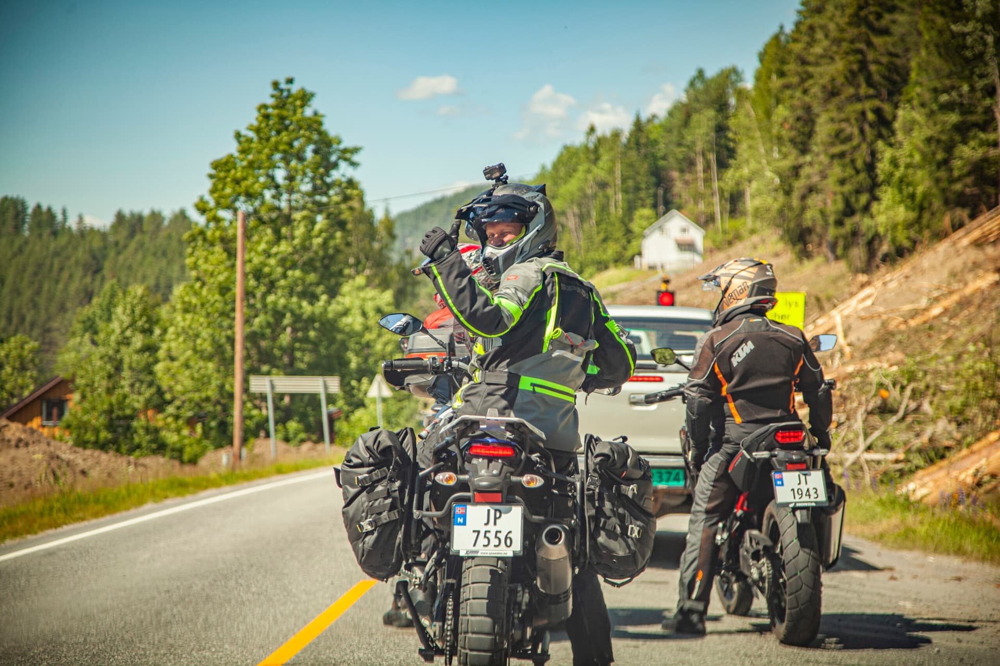
Kjøregårdsøvelser på asfalt og grus – en trygg og lærerik sesongstart for både nye og erfarne førere.
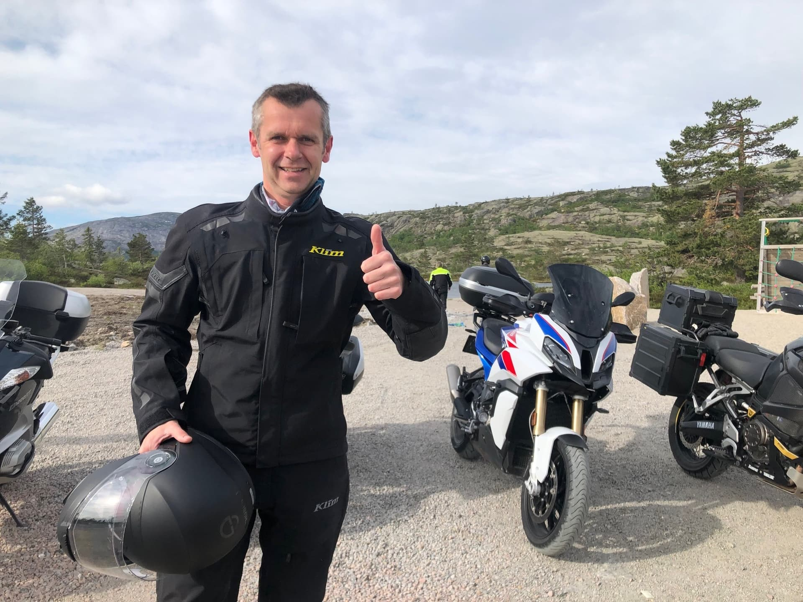
En sykkelhelg utenom det vanlige: utstillere, prøvesykling og guidede turer i flott natur rundt Vrådal.

Bad og sol på stranden, SUP, pedalbåt, kajakk og trampoline – og is, mat og drikke ved vannkanten fram til ca. 20. august.
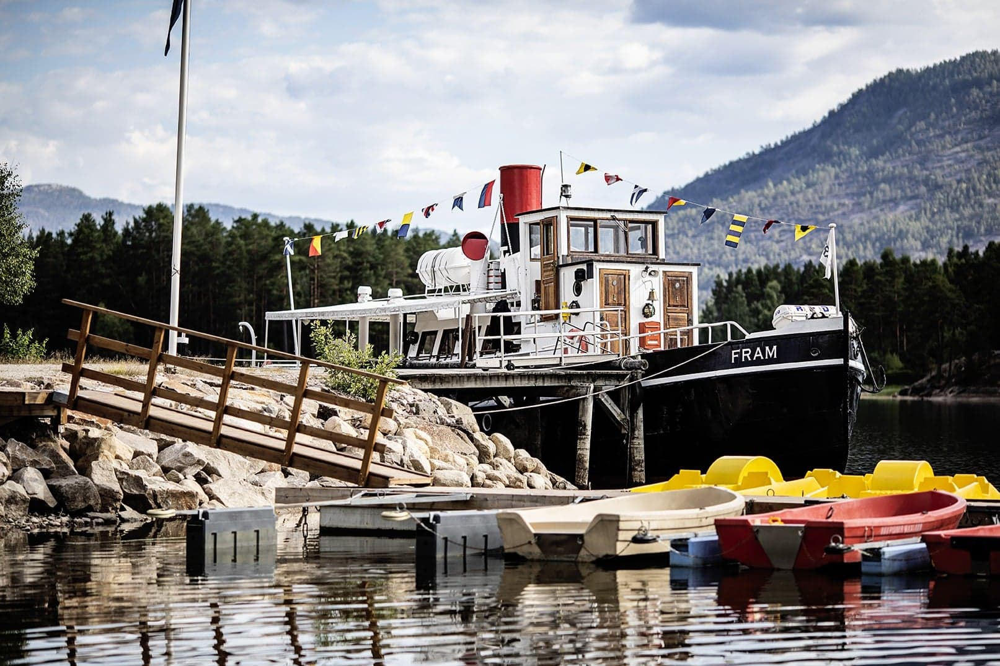
Rute- og sightseeingturer med veteranbåten fra 1909 i vakker innlandsskjærgård.
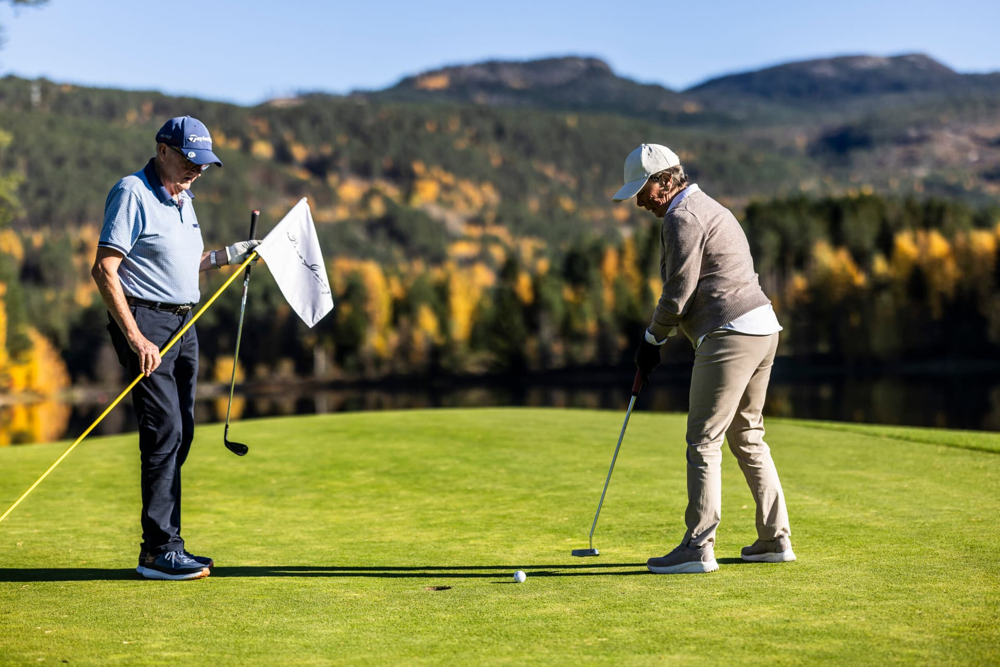
Golfturnering i nydelig natur på Fossøy – med gode opplevelser både på og utenfor banen.
Treff for motorsyklister og bilentusiaster med utescene, kjøreturer og fellesskap.

Avslutningshelg for bilentusiaster med utstillinger, foredrag, felles kjøreturer gjennom Telemarks vakreste landskap og festmiddag.
Datoer for 2027 publiseres fortløpende. Har du et arrangement i Vrådal? Tips oss.